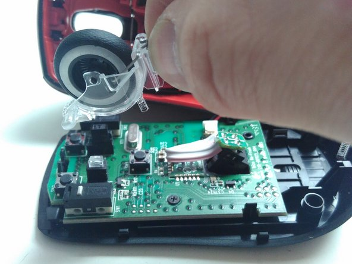
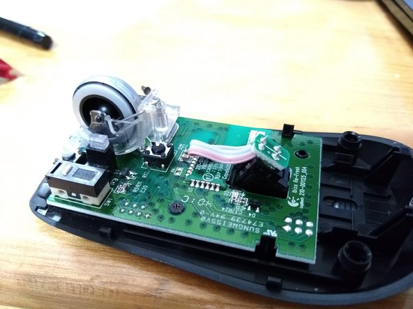

Find and repair a mouse click, tracking or wheel fault
Separate USB and wireless reports from button switches, optical tracking, scroll encoders and cracked wheel mechanisms.
Test the three output paths separately
- Use a known-good second host and same receiver, cable or documented Bluetooth connection. Replace or recharge the battery with a supported source. For a wireless model test near its receiver or host.
- Test tracking on a clean matte surface and watch cursor motion consistently in each direction. Inspect the exterior sensor window and clear loose debris with gentle dry cleaning. Keep the sensor lens unmarked.
- In a local application compare one press per click and one deliberate wheel step per direction. Try another OS profile or check click-speed and mapping settings. Record the exact button, faulty direction and conditions; pointer tracking, left click and wheel reporting have separate paths.

Photo by Stephan and iFixit contributors, with added labels. Original guide · CC BY-NC-SA 3.0.

Photo by Stephan and iFixit contributors, with added labels. Original guide · CC BY-NC-SA 3.0.
See a Logitech wheel cleaning example. Verify your exact wheel and encoder type before opening.
Use the model guide to open the mouse if the symptom follows it
Unplug it and remove the battery or follow the documented isolation procedure. Look for hidden fasteners and replaceable feet before prying. On the M525 case compare the wheel assembly and sensor area to the photos. Check wheel axle, spring location and visible debris. A different model may use a mechanical wheel encoder; match shaft height, pin map, mount and steps to its exact spec before replacement. For a bad click on a detachable or isolated mechanical microswitch, compare its common and switched terminals with a known-good switch. A basic meter checks steady contacts; capture intermittent bounce on an isolated trainer as in P110 · See a bouncing switch and clean up a digital edge. Optical switches need the correct optical service procedure.
After repair, repeat the same 20 single clicks per button and 20 scroll increments in both directions. Check tracking, middle-click, side buttons and sleep/wake where applicable. Record whether faults follow the device, receiver, surface, wheel or switch. Use P131 · Diagnose and repair iClever and other keyboards for the equivalent keyboard path.